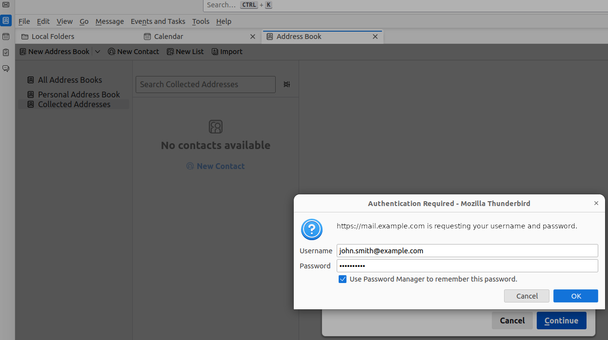
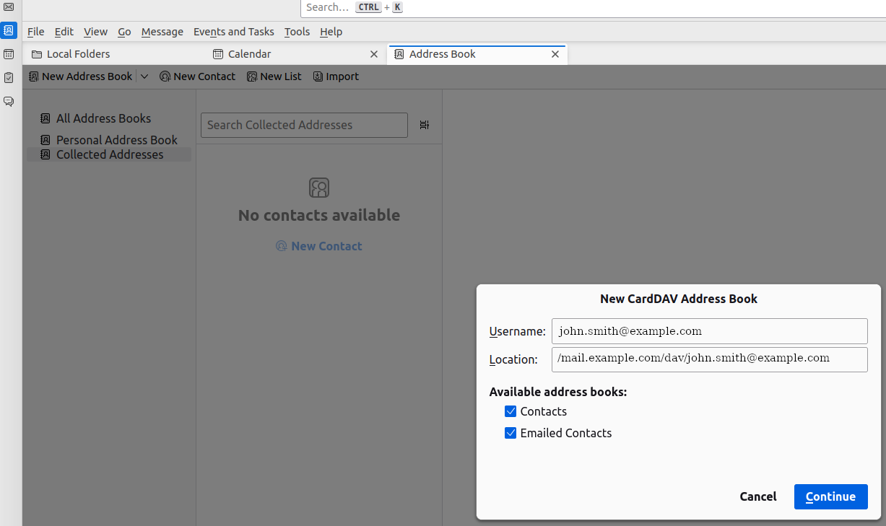
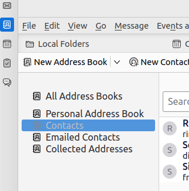

Working with Contacts#
In the Contacts component you can keep track of all the people with whom you exchange e-mails and group them in address books. Existing address books appear on the column on the right of the component’s list. You can create new contact by using the NEW button and selecting New Contact; they will be stored under the Contacts section of the Contacts component. You can also choose under which address book the new contact is stored. Additionally, mail-tags can be added to any contacts.
Note
Addresses of people to whom you send an e-mail are automatically added to the Emailed Contacts.
Deleted contacts land in the special Trash address book, which keeps them until you manually empty it. To do so, right-click the address book and select Empty trash.
A right-click on the address book allows to carry out a few action on it and its content: edit, share, empty, or delete it. Moreover, new address books can be created. For each contact, icons allow to carry out different actions: delete, move, or write an e-mail to the contact.
Hint
To move the contacts from one address book to another, you can also drag the contact and drop it on the destination address book.
If any colleague has shared an address book, you can click the FIND SHARES button under Shared Address Book and provide the e-mail address. You will see all the address books shared by the user.
You can search among contacts using the search bar. You can then refine your search by clicking the ADVANCED FILTER button. Here you can also choose to include shared address books in the search.
Configure a CardDav Client#
Adding a Carbonio address book to your favourite CardDAV client is straightforward and requires only a few steps.
In this scenario, the user john.smith@example.com wants to import in Mozilla’s Thunderbird an address book from on the domain mail.example.com. In the remainder, replace these values with suitable ones.
On your client, go to the Calendar and select New Address Book,
providing the Username and the Location, which has format
https://<domain>/dav/username, so
https://mail.example.com/dav/john.smith@example.com
{kind=link}
Authenticate co Carbonio by inserting the username and password to access the address book.
{kind=link}
You will be then presented a list, from which to choose the address books to import in the client.
{kind=link}
You are now done! The imported address books will show up in the list of your client.
{kind=link}